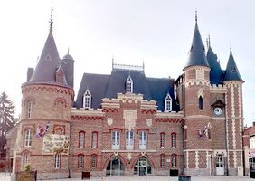
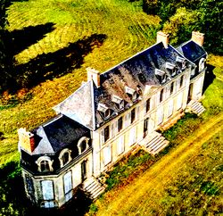
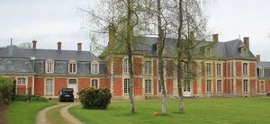
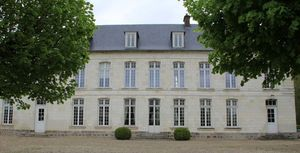
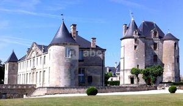

Recensement Jean-Claude Truffet





| Département | 80 — Somme |
| Canton | Corbie |
| Commune | Corbie |
| Type d'édifice | Château |
| Période d'origine | XVII-XIX |
| Coordonnées GPS | 49°54' 28,43" Nord, 2°30' 43,7" Est Fouilloy GPS : 49° 54' 01" Nord, 2° 30' 16" Est |
Trois château dans cet article; Corbie , Fouilloy et Bussy. CORBIE, cet ancien château appartenait au Baron Oswald Caix de Saint-Aymour construit sur les plans de l'architecte amiénois Charles Joseph Pinsard au XIXe siècle. Charles-Louis-Marie-Oswald de Caix de Saint-Aymour, maire de Corbie de 1855 à 1861 et conseiller général de 1848 à 1861 fit construire un château de style troubadour entre 1850 et 1854 pour lui servir de résidence temporaire. Sa fille Hélène en hérita ; elle épousa Albalat y Navajas, comte de San Carlos et le couple partit vivre en Espagne. En 1923, grâce à la contribution financière de la ville de Chartres, marraine de guerre de la ville de Corbie, la municipalité racheta le château qui fut transformé en hôtel de ville et le parc en jardin public. La façade de l'hôtel de ville a été ravalée et le jardin public réaménagé en 2013, désormais, une place-parvis dénommé « espace Chartres » donne accès au monument aux morts sculpté par Albert Roze et à l'hôtel de ville. Construit en brique, le bâtiment est facilement identifiable par ses tourelles couvertes d'ardoise. Il a été rénové complètement en 2013 ainsi que le jardin public qui l'entoure. A l'est village voisin FOUILLOY château servant d'hôtel de ville La construction du château date du XIXe siècle. Il se situe rue Jules Lardière, à Fouilloy. Georges Duhamel, médecin militaire en 1916 et écrivain fut en cantonnement à Fouilloy. Il la évoqué dans des lettres écrites à son épouse. Aujourdhui les services de la mairie se trouvent au milieu dun parc aménagé dans lancien château de Fouilloy datant du XIXe siècle et qui fut cédé à la commune au XXe siècle.
BUSSY les Daours à l'ouest de Corbie. La seigneurie de Bussy, qui relevait de la châtellenie de Daours, appartient surtout aux familles de Sacquespée aux XVIe et XVIIe siècles et Pingré au XVIIIe siècle. Le 1er des Sacquespée à posséder Bussy fut Pierre, écuyer, seigneur de Becquincourt, mayeur d'Amiens en 1535, receveur des tailles de l'élection d'Amiens. A la mort de l'un de leurs descendants, le château fut vendu en 1696, à Louis de Gomer, mais ce dernier revendit le domaine, dès 1713, à Adrien Pingré, bourgeois et échevin d'Amiens en 1686, conseiller secrétaire du Roi, maison et couronne de France. A la fin du XIXe siècle ce sont les de Witasse Thézy qui habitent le château. Agnès de Witasse Thézy fut la dernière à y vivre jusqu'en 1982, date de son décès. Le château actuel, de dimensions modestes, fut conçu comme une maison des champs, construit en pierre au XVIIIe siècle, il fut remanié au XIXe siècle. On ajouta en particulier, vers 1830, les deux ailes latérales. DAOURS, les premiers seigneurs de Daours portaient le nom de leur terre. Les plus anciens que l'on connaisse sont, en 1148, Gérard de Durs, et, en 1153, Baudouin de Dours. Il existait alors un château-fort très important situé non loin du confluent de la Somme et de l'Hallue, à 200 m envifon en face du château actuel, construit au XVIIIe siècle, comme une propriété de campagne, se caractérisant par sa sobriété. Il est construit entièrement en pierre sur un soubassement en grès, et se compose d'un corps de logis orienté nord-sud, de plan rectangulaire, dont l'élévation est à deux étages. Dans le prolongement du corps de logis, d'un côté seulement, en l'occurrence à l'ouest, fut bâtie un peu plus tard, pour la famille Lequieu, une aile latérale comprenant un rez-de-chaussée couvert d'un toit à la Mansart. De toute évidence une autre aile existait à l'est mais fut détruite à une date imprécise par un incendie, semble-t-il. M. et Mme Hollville qui ont redonné vie à l'édifice, dans l'enceinte duquel ils ont installé un magasin d'antiquités.
corbie; .Charles-Louis-Marie-Oswald de Caix de Saint-Aymour Fouilloy; Georges Duhamel Bussy; famille de Sacquespée Daours;famille Lequieu"
Trois châteaux dans cet article; Corbie grav-1, Fouilloy Grav-5 et Bussy grav-2-3-4. Corbie GPS : 49°54' 28,43" Nord, 2°30' 43,7" Est Fouilloy GPS : 49° 54' 01" Nord, 2° 30' 16" Est